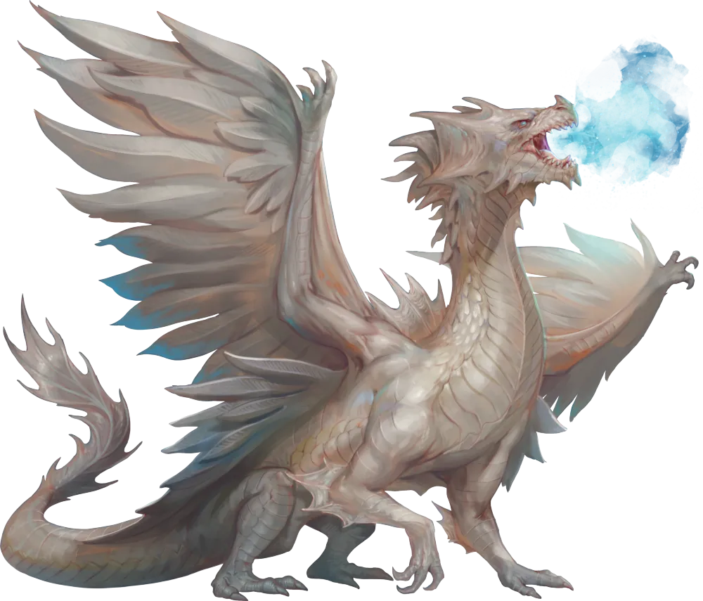

各年龄段数据卡
太古白龙与其他任何白龙一样嗜好痛快淋漓的激战，但它们同时也明白：最能磨砺自身的势均力敌死斗，恰恰也最有可能让它们漫长的生命在血腥暴毙中戛然而止。因此，它们常常寻找既能与其他强大存在切磋交手、又能将自身性命风险降至最低的机会。出于这一考量，受魔法强制约束规则的决斗与竞技场比武在它们当中颇受欢迎――尽管其他年轻白龙一听到条条框框的规矩就烦躁不已。 不过，倘若一头太古白龙真能结交到一位既是战友又是劲敌的知己――双方既能倾尽全力放手搏杀，又能笃定彼此绝不会在分出胜负后痛下杀手――它们便几乎绝不会背叛这段弥足珍贵的情谊。在外人眼中，这头太古白龙与它的挚友劲敌或许活像一对不共戴天的死敌：定期展开凶残血战，使出毫不留情的狠辣战术，倾泻足以将四周环境夷为平地的毁灭绝技。 可实际上，二者之间的亲密程度远非寻常朋友可比。作为对手，它们对彼此知根知底，各自都在苦苦审视、剖析对方身上每一处可能的破绽；对胜利的执着追求，更让它们看穿了对方连至亲家人都未必察觉的细微之处。一头太古白龙与自己的战友搭档先把对方打到只剩一口气，转头便相视大笑着坐下来把酒言欢、共进大餐，这可绝非什么稀罕事。 冰峰绝顶白龙一向被视为最弱小的色彩龙，在所有巨龙家族的真龙当中也敬陪末座。正因如此，一头白龙竟能历经万难活到成为太古龙，跻身极少数巨龙方能企及的超越远古之强横境界，本身便是一桩坚忍不拔、逆天改命的壮举。太古白龙有十足的理由为自己一路披荆斩棘、最终登临冰封雪山家园众生之巅而深感自豪，但它们却极少居功自满。总会有其他强大存在妄图挑战它们在冰峰之巅的王冠；倘若当初对这些威胁掉以轻心、躺在功劳簿上睡大觉，它们从一开始就不可能活到如此古老而强横的今天。 除非它们选定的劲敌同样是巨龙或寿命相仿的长生种族，否则对方注定会日渐衰老凋零，而太古白龙却只会随着岁月流逝继续成长变强。对于那些渴望在英雄迟暮之前以战士之姿荣耀战死的挚友，有时他们会向自己的白龙朋友提出最后一个请求：毫无保留、不死不休的最后一战。死在相伴多年的切磋劲敌利爪之下，对这样的战士而言堪称得其所哉；而他们的记忆与英名，也将就此融为巨龙自身传奇的一部分。 被低估的艺术家尽管太古白龙普遍被认为是所有色彩太古龙中智力与城府最低的一脉，但它们的智慧依然胜过绝大多数类人生物。它们是出类拔萃的艺术家、建筑师与工程师，不仅能雕琢出栩栩如生的超写实冰雕、筑起宏伟壮丽的冰雪巢穴与宫殿，还能用别具一格的奇巧冰景改造自己领地内的地形地貌。 |
 太古白龙 |